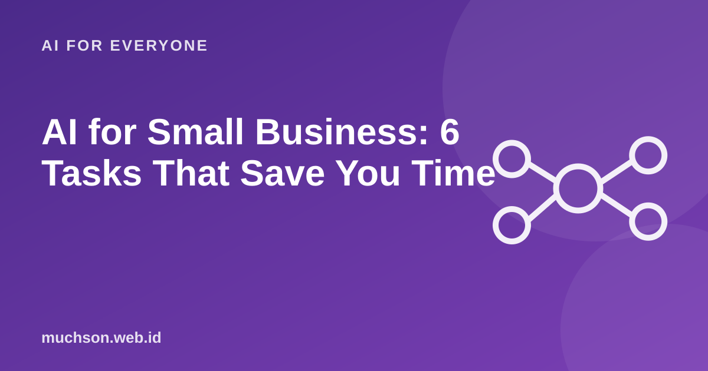

Home › Articles › AI for Everyone
AI for EveryoneAI for Small Business: 6 Tasks That Save You Time
Small business owners usually do everything themselves: production, customer service, promotion and bookkeeping. AI will not replace you, but it can take over time-eating admin work, as long as it is used carefully.

Six tasks that fit best
| Task | How AI helps | What you must still check |
|---|---|---|
| Captions and content ideas | Drafts, variations and a content calendar | Tone that matches the brand, product claims |
| Customer replies | Draft answers to common questions | Prices, stock, delivery promises |
| Product descriptions | Writing and tidying descriptions | Accuracy of specifications and materials |
| Recaps and summaries | Summarising sales notes or reviews | Numbers and conclusions |
| Brainstorming | Product names, bundles, promos | Feasibility and margin |
| Document templates | Drafts of quotes and simple contracts | Legal content; get advice if it matters |
Text description of the diagram
- Ask for a draft: the AI makes a first version
- Check: facts, prices, tone
- Adjust: to your business's style
- Send: you are responsible
Calculate the potential time saved
Mind customer privacy
Do not enter customer data (names, addresses, phone numbers) or confidential financial information into a public chatbot. Disguise the data, or use a business service with a clear privacy policy.
Start small
FAQ
Does AI replace employees?
In small businesses AI more often reduces admin load so the team can focus on customers and products. Decisions and customer relationships stay human.
Do I need a paid subscription?
Start with the free version to test. Subscribe when the benefit is clear and you use it regularly.
What about automatic replies to customers?
Full automation is risky if the AI gets a price or stock level wrong. Start with drafts you approve, then consider limited automation.